Dan peti: Šiba inu, virtuelna mačka i Godzila
Jutros sam za malo bacila sve evre što sam ponela. Mudro ih zamotala u uputstvo od leka Febriceta i krenula da bacim kutiju i reko što je ovo uputstvo tako debelo. A ono puno novaca. Ajao. Za dlaku.
Hteli smo da se probudimo u devet ali smo se probudili u 13h. Svi osim Petra, on je ranije. Prvo smo otišli do hrama Senso ji da ga deca vide i po danu i sav taj šareniš od prodavnica.
Kristina je našla japansku svesku u koju će da crta, lupa pečate sa stanica i iz hramova, napravi neki kao dnevnik.
Japanci imaju kafiće sa životinjama. Deca vole i žele da maze Šiba inu psa. Baš na Senso ji bio jedan takav kafić sa kučićima i to baš sa Šiba inu.
Ne smeš da ih dižeš, vučeš, nego samo maziš i to ne po glavi od gore. Kučići su radoznali. Prilaze, njuškaju. A neki i legnu u krilo i odspavaju. Kristina i Luka žele crnu Šiba inu, i Kristini je crna zaspala u krilu. Kristina se otopila od sreće. To joj je jedan od najdražih doživljaja u Japanu.
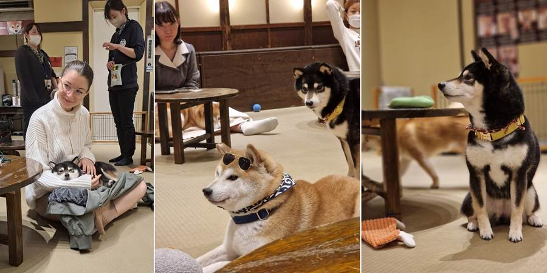 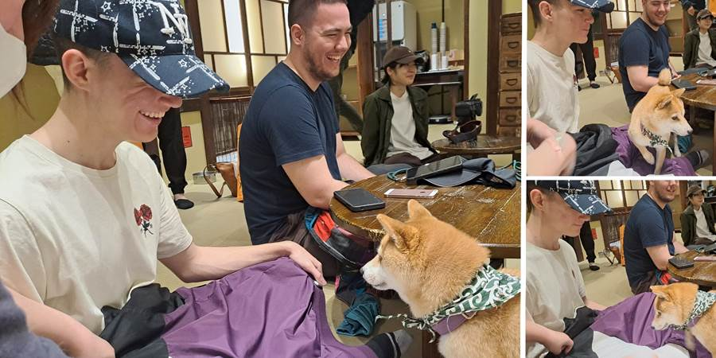Kuce su u nekom momentu potrpali u transportere, došao je lift i doneo nove kuce. Tako da to deluje humanije, da nisu kuce stalno tu. Jedino mi deo sa liftom nije jasan jer su to prizemne kućice. Onda lift ide u podrum? Nadam se da ih negde odvezu da ne čuče u podrumu.
Prošećkali se po Senso ji. Kupili štapiće kojima se jede, magnete, suveniriće. Jeli jagode. U neko doba morali u toalet. Ja bogami naišla na čučavac. Da, čučavac pored onih robotskih WC šolja. Kod najveće znamenitosti, hrama Senso ji, toaleti su čučavci. I to mi je jedan od glavnih utisaka Japana. Sudar suprotnosti, urbano i tradicionalno.
Posle smo išli u Šibuyu u jedan tržni centar gde ima Nintendo prodavnica, Pokemoni, Minecraft. Kupili su neke sitnice i slikali se gde biraš Minecraft pozadine.
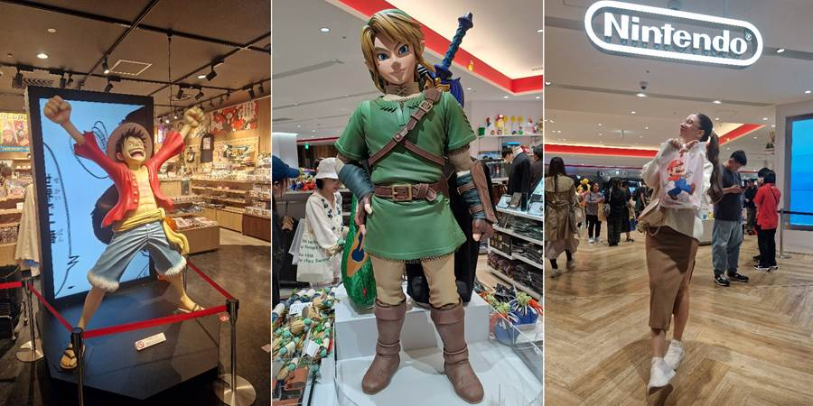 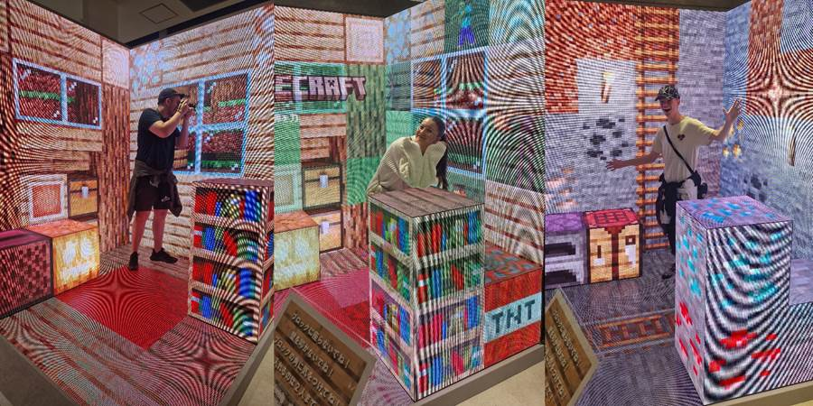Za to vreme sam ih čekala u Starbaksu. Uzela sam nešto sa komadićima dinje jer sam čula da su u Japanu izuzetne dinje. I jesu. Šta oni rade sa tim voćem, nije mi jasno. Voće im nije GMO.
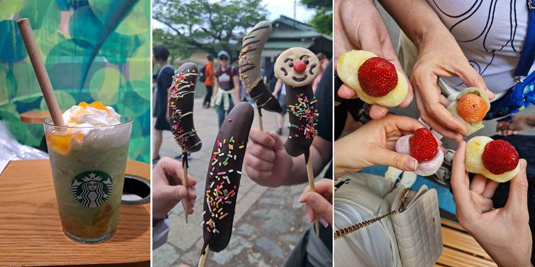Otišli smo opet u onaj restoran sa pokretnom trakom, Uoebo. Šta je dobro valja ponoviti. Ja sam nepoverljiva prema sirovom mesu al me Luka ubedio da probam jedan suši i baš je bio dobar. Ima jak ali lep ukus.
Petar je naručio i nogu kraljevske krabe. Rekla bih da je sirova. Školjke, lignje, ikru, sirovu ribu, tempuru - pohovane račiće i na kraju tortu. Luka je uzeo i mrvljeni led sa limunom i baš osvežava.
Onda je na red došla Shinjuka. Prvo smo naleteli na čuvenu 3D macu, reklamu.
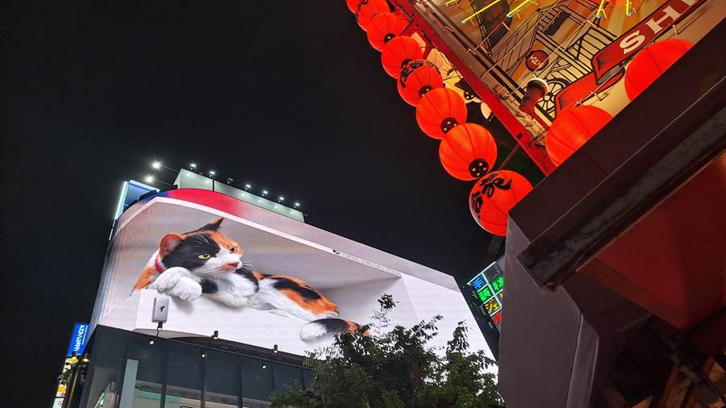Otišli smo i do Omoide Yokocho, redak stari deo Tokija, koji je preostao nakon bombardovanja u Drugom svetskom ratu. Tokio je inače sravnjem sa zemljom.
Kyoto, stara prestonica, je ostavljen za kraj pa je srećom ostao sačuvan. Zato je tako popularan turistima jer ima taj stari drveni grad.
U Yokocho je jedan mali Japanac prišao Luki, divio mu se i tražio da se slikaju zajedno. Pitao ga je na japanskom a Luka je razumeo.
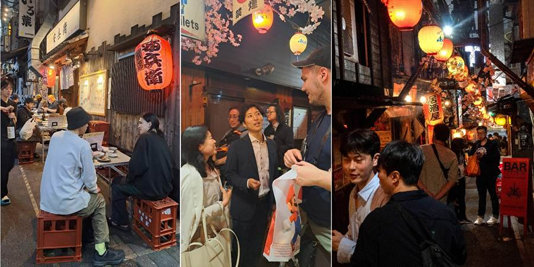 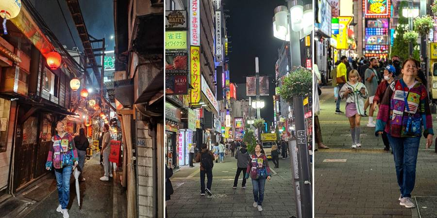 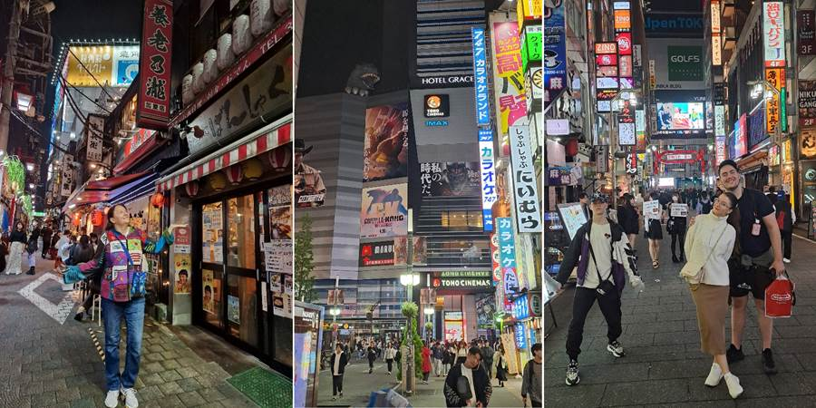Otišli smo i do Godzile na zgradi, prošetali još malo šljaštećim modernim ulicama.
Petar je imao želju da se slika ispred KFCa gde su scene iz nekog crtanog. Baš nam je bilo usput i slikao ga je Luka i bio je zadovoljan.
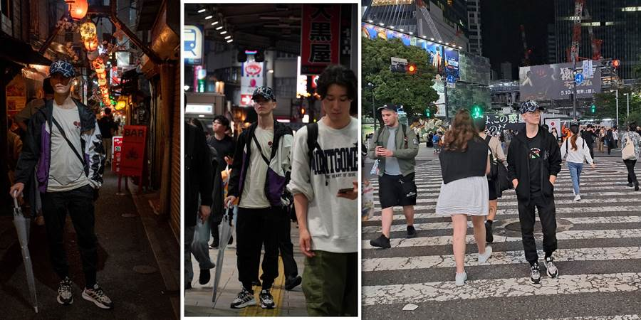 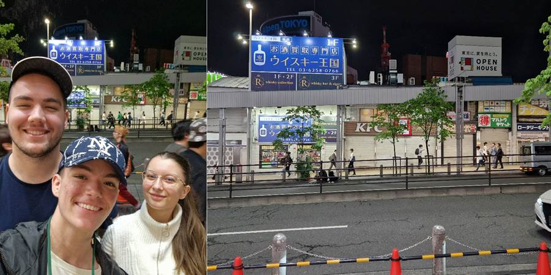Ne mogu čudom da se načudim, videli smo jedno pet velikih pacova. Luka ih zove Splinter po Nindža kornjačama.
Videli još par beskućnika na metro stanici kako leže na kartonu pokriveni ćebetom. Kako je moguće da Japan to nije rešio?
U 7 Eleven ima da se iznajme punjači za mobilni. Eh, da smo to znali prvi dan. Napuniš telefon i vratiš punjač u sledeći 7 Eleven na koji naiđeš. Sjajno.
Ne propustite sledeću avanturu!
Kad Sandra krene u novi kraj sveta, vaš inbox prvi sazna. Prijavite se i stižu vam sve nove priče mejlom.